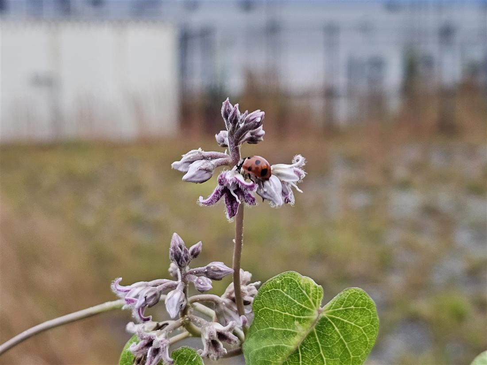

ガガイモ（蘿藦）
Metaplexis japonica (Thunb.) Makino
別名 · 羅摩／種子は羅摩子（らまし） ／ 2016年の学説で Cynanchum rostellatum（イケマ属）
キョウチクトウ科 · Apocynaceae（ガガイモ亜科・ガガイモ属）
燻太さんの言葉「紫色のふわふわの星。てんとう虫も遊びに来てる。しなやかな蔓は華奢な割に結構丈夫そう」……手がかりがぜんぶ的中。そして、045ブルースターと同じ一族の“名前の主”だった。
燻太さんの手がかりが、ぜんぶ的中
- 「紫色のふわふわの星」＝淡紫〜白の花。花冠が5つに深く裂けて星形に反り返り、内側に白い軟毛が密生する（＝あの“ふわふわ”）。
- 「しなやかな蔓は華奢な割に結構丈夫」＝つる性の多年草で、蔓は2〜8mにも伸び、細いのに強い。対生のハート形（心形）の葉。
- 「てんとう虫（ナナホシテントウ）」＝たぶんアブラムシを狩りに来た客。ガガイモ亜科（トウワタの仲間）はオレンジ色のアブラムシがよく群れる。花に用があるというより、虫を食べに来た益虫（送粉者ではない）。
- ⚠キョウチクトウ科なので茎を切ると白い乳液が出る。有毒。（020 フィロデンドロン・045 ブルースターと同じ「乳液に注意」の仲間）
⭐⭐⭐ 045 ブルースターと、同じ一族 ── 「ガガイモ亜科」の名の主
- ⭐ガガイモは、ガガイモ亜科の“名前の主”。そして——045 ブルースター（Tweedia caerulea）も、まったく同じ亜科。
- 045 で説明した、この一族の身分証明が、この野の蔓にも全部そろっている：
- 副花冠（corona）＝花の中心の環状の構造（ガガイモ亜科の目印）。
- ⭐⭐花粉塊（pollinia）＝花粉が粉ではなく、塊にまとまっていて、虫の脚に「荷物」として丸ごと渡される。
同じ発明をした植物は、遠く離れた ラン科（002 ネジバナ）だけ＝収れん（他人の空似）。045 で書いたこの話を、日本の野の蔓が、そのまま見せてくれる。 - 綿毛の種の袋果＝下の「果実」参照。
- → つまり、045（南米生まれの園芸の青い星）と 051（日本の野の紫の星）は、遠い親戚。外来の一輪と、在来の一輪が、同じ一族としてつながった。
⭐⭐ 果実は「舟」── 古事記の神さまが乗ってきた
- 花のあとにできるのは、長さ8〜10cmの、紡錘形の大きな袋果。
- ⭐熟すと縦に割れて、内側が舟の形になる。中から、白い綿毛（種髪）のついた種がこぼれて、風に飛ぶ（045 ブルースター・フウセントウワタと同じ、綿毛の散布）。
- ⭐⭐⭐この“割れた実の小舟”が、日本神話に出てくる。
古事記で、小さな神さま スクナビコナ（少名毘古那）は、「天之蘿摩船（あまのかがみのふね）」に乗って海の向こうからやってくる。——それが、ガガイモの実を2つに割った、小さな舟のこと。 - この野原の花の実が、神さまを運ぶ舟だった。
学名と名前・昔の暮らし
- Metaplexis＝ギリシャ語で「編み合わさる」ほどの意（つるが絡むさま）。⚠2016年の学説でイケマ属（Cynanchum）に統合が妥当とされ、Cynanchum rostellatum も使われる（→ おまけを「イケマ」にしたのは、この統合先の本家だから）。
- ⭐和名ガガイモの由来＝「割れた実の内側が、鏡のように光る」→ カガミイモ（鏡芋）→ 訛ってガガイモ。
- 種の白い綿毛（種髪）は、綿の代用や、朱肉（印の朱の詰め物）に使われた。切り傷には白い毛をつけると良いとされた（止血）。種子は生薬「羅摩子」。